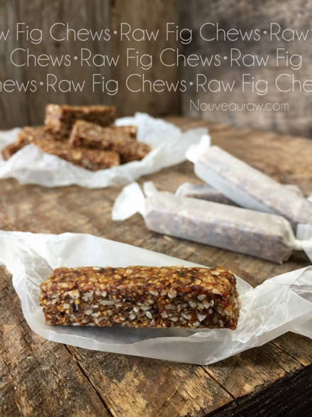

Fig Chews

raw / vegan / gluten-free / nut-free
Do you know what brings me the greatest joy? Making healthy treats for my husband. The joy it gives me blesses me to no end.
I do my best to keep a jar(s) on the island counter for him, so he always has yummy snacks available. And I never miss the opportunity to stuff his shirt pocket with little bags of nuts, seeds, dried fruit, or snacks such as this one.
These bars are chewy, almost candy-like. You can cut them into larger bar sizes if you wish, but I find that by cutting them into small-two-bite pieces, that they make the perfect snack without filling a person up too much. Heck, split the batter and make both sizes!
You can enjoy this recipe without dehydrating it if you are either pressed for time or don’t have a machine. Keep them stored in the fridge or freezer, slicing off a piece as the cravings hit.
I mentioned above that these bars are almost candy-like… when I say that, it’s not because they are overly sweet. There is a perfect balance between the dried fruits that I used and the raw coconut nectar.
The figs really shine through in the recipe, and part of the wonder of those figs comes from their unique taste and texture. They are lusciously sweet and feature a complex texture that combines the chewiness of their flesh, and the crunchiness of their seeds. That combined with all the different seeds, lends for a very chewy and crunchy treat that can’t be beaten. Enjoy!
Ingredients:
Yields 7x7x1/2″, cut into 40 sticks
- 1 cup (160 g) dried figs, soaked
- 1/2 cup (85 g) raisins or golden berries, soaked
- 2 Tbsp coconut oil, melted
- 1/3 cup raw coconut nectar
- 1/2 tsp vanilla extract
- 1/4 cup white sesame seeds
- 2 Tbsp chia seeds
- 3 Tbsp hemp seeds
- 1/4 cup raw sunflower seeds, soaked & dehydrated
- 1/3 cup shredded coconut
- 1/8 tsp Himalayan pink salt
Preparation:
- Place the figs and golden berries in a bowl and add enough warm water to cover them. Set aside.
- This will soften the dried fruit, making it easier to blend.
- Once done soaking, drain the soak water but don’t discard it.
- Place the dried fruit in the food processor, fitted with the “S” blade. Add coconut oil, coconut nectar, vanilla and process to a paste.
- Add sesame, chia, hemp, and sunflower seeds, coconut, and salt. Process until the dough starts to roll onto itself. It should be very sticky and thick. If need be, add more soak water, so the batter is moist.
- Spread into a lined baking pan and place in the freezer for 30+ minutes.
- This will harden it, making it easier to cut into bar shapes. This step can be skipped.
- Or the bars are ready to be enjoyed if you want to keep them stored in the freezer, removing 1 bar as needed. Or you can dehydrate them.
- Dehydrate at 145 degrees (F) for 1 hour, then reduce to 115 degrees, continuing to dehydrate for up to 24 hours.
- Allow to fully cool before storing. Wrap each “candy” in a piece of wax paper and store in an airtight container on the counter, in the fridge, or even the freezer.
Culinary Explanations:
- Why do I start the dehydrator at 145 degrees (F)? Click (here) to learn the reason behind this.
- When working with fresh ingredients, it is important to taste test as you build a recipe. Learn why (here).
- Don’t own a dehydrator? Learn how to use your oven (here). I do however truly believe that it is a worthwhile investment. Click (here) to learn what I use.
© AmieSue.com